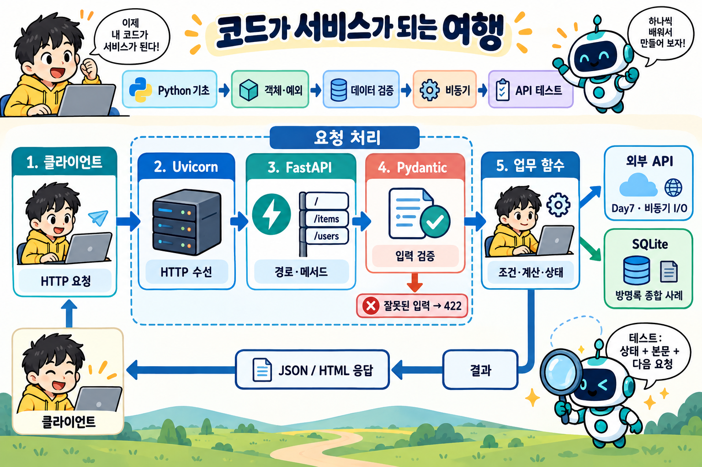
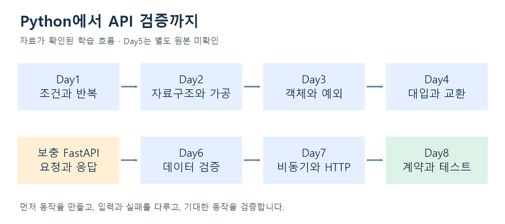
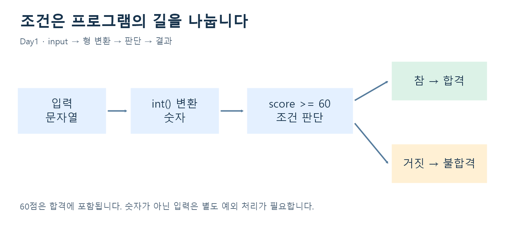
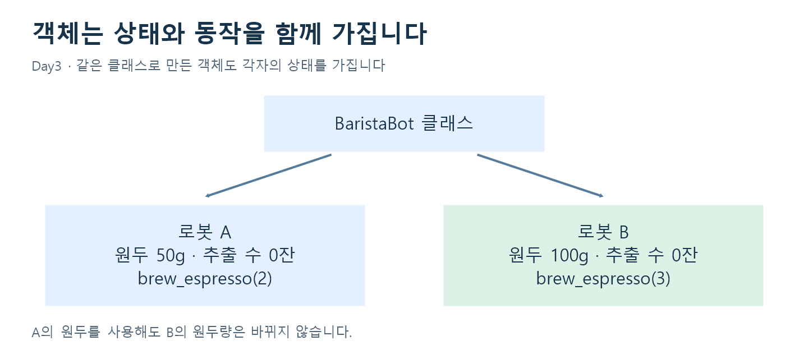
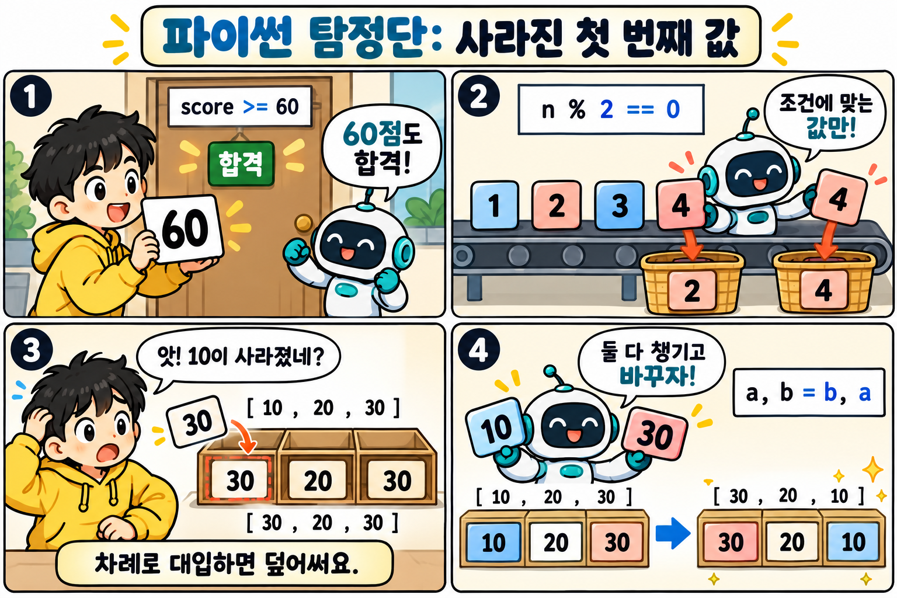
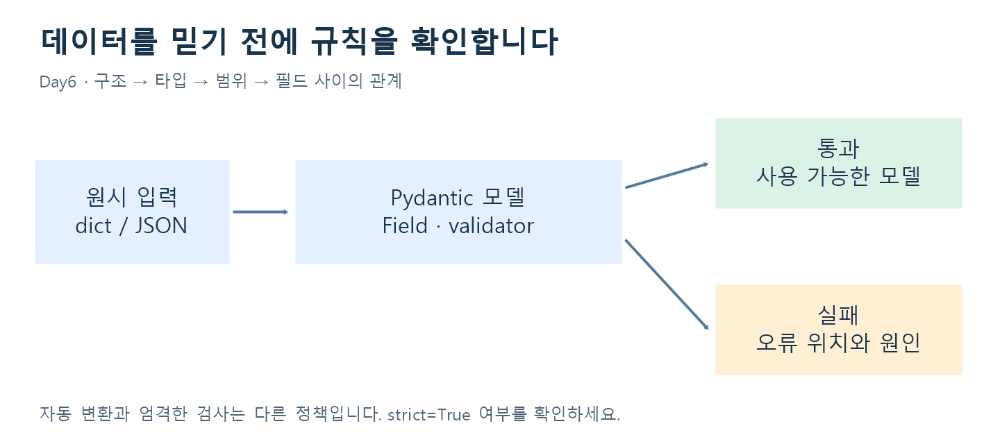
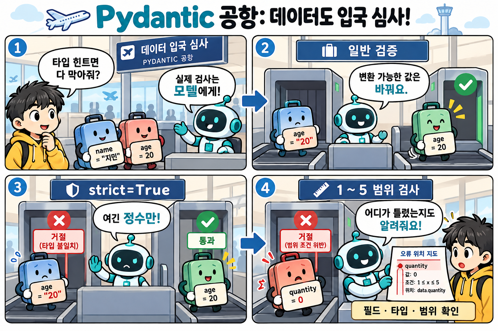
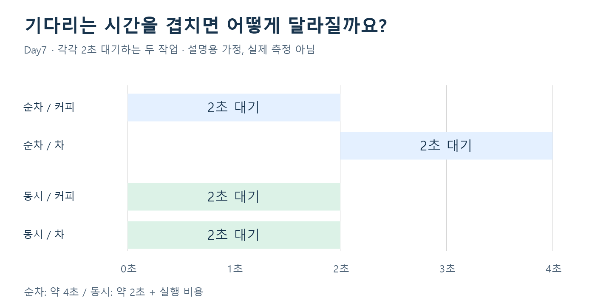
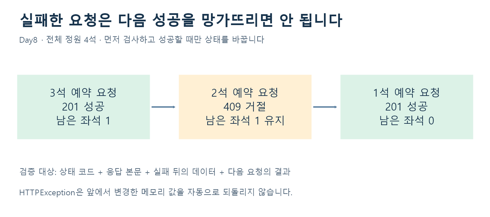

Python 기초에서 FastAPI 검증까지 · Day1–Day8 학습 노트
분석 기준: 로컬 수업 소스와 교안 · 2026-10-23

읽는 순서: 클라이언트의 HTTP 요청 → Uvicorn 수신 → FastAPI의 경로·메서드 선택 → Pydantic 입력 검증 → 업무 함수 → 응답입니다. 업무 함수는 필요에 따라 외부 API를 기다리거나 SQLite를 사용합니다. 이 두 가지는 선택적인 연결이며 모든 요청에서 연달아 실행되는 단계가 아닙니다.
그림은 역할을 나눈 개념도입니다. 입력 검증과 업무 함수 호출은 FastAPI의 요청 처리 안에서 이어집니다. SQLite는 별도 Day1-Day8 방명록 종합 사례, 외부 API와 비동기 I/O는 Day7에 해당합니다. FastAPI의 기본 입력 검증에 실패하면 422 응답을 보내며, 모든 종류의 오류가 422인 것은 아닙니다.
입력받기 → 조건으로 판단하기 → 데이터를 구조화하기 → 검증하기 → API로 제공하기 → 테스트로 확인하기의 흐름으로 복습합니다. 각 일자의 ‘직접 해보기’를 먼저 풀고 마지막의 답과 비교하세요.
이 문서는 원본 코드를 바탕으로 새로 작성한 해설입니다. ‘교정 예제’는 원본을 수정한 파일이 아니라 이해를 돕기 위한 예제입니다. 원본에는 학생 실습, 의도한 결함, 수정본, 정답이 섞여 있습니다.
| 구간 | 확인한 자료 | 학습의 중심 | 완료하면 할 수 있는 일 |
|---|---|---|---|
| Day1 | Day1/day1-1.py ~ day1-5.py | 변수·입력·조건·반복 | 숫자 게임과 짝수 필터 작성 |
| Day2 | Day2/오전, Day2/오후 | 논리·자료구조·컴프리헨션 | 권한 판별과 목록 가공 |
| Day3 | Day3/오전, Day3/오후 | 객체·예외·리팩터링 | 상태를 관리하고 잘못된 입력 처리 |
| Day4 | Day4/day4-1 | 인덱스·대입·교환 | 값이 덮어써지는 과정 설명 |
| Day5 | 해당 이름의 폴더 없음 | 수업 원본 미확인 | 아래 보충 FastAPI 자료로 연결 |
| Day6 | Day6/basemodel, ch04_validator, ch05_nested | Pydantic 모델·검증 | 입력 규칙을 선언하고 오류 위치 확인 |
| Day7 | Day7/01 ~ 03 | 비동기·HTTP·동시성 | 대기 시간을 겹치고 외부 응답 검사 |
| Day8 | Day8/lesson_01 ~ lesson_08 | 명세·입력·응답·상태 테스트 | 계약에서 기대값을 도출하고 회귀 검사 |

범위 메모: Day4는 확인한 코드가 짧아 다른 날짜와 같은 분량으로 확대하지 않았습니다. 05.FastAPI-uvicorn과 fastapi_win_vscode는 FastAPI 보충 자료로 활용하며 Day5라고 단정하지 않습니다. Day1-Day8 방명록은 별도 종합 결과물로 다룹니다. Day4/login.txt의 내용은 정리에 포함하지 않았습니다.
number1 = 100처럼 값을 이름에 연결하고 +, *, %로 계산합니다.input()은 문자열을 반환합니다. 숫자 계산에는 int() 같은 변환이 필요하며 잘못된 입력은 예외가 될 수 있습니다.if/else로 표현합니다. >=는 경계값을 포함합니다.for, 조건을 만족할 때까지 반복하면 while을 사용합니다. break는 현재 반복문을 끝냅니다.range(2, 10)에는 10이 포함되지 않습니다.
원본 Day1/day1-3.py의 흐름을 간결하게 정리한 예제입니다.
scores = []
for i in range(5):
scores.append(int(input(f"{i + 1}번째 숫자: ")))
for score in scores:
if score % 2 == 0:
print(score)
% 2의 결과가 0이면 짝수입니다. 입력과 필터링을 나누면 각 단계의 역할을 확인하기 쉽습니다. 이 예제는 숫자가 아닌 입력의 예외 처리를 생략했습니다. 그 내용은 Day3에서 연결합니다.
random.randint(1, 100)은 양 끝을 포함한 정수를 만듭니다. 정답보다 큰지·작은지 비교하고, 정답이면 반복을 끝냅니다. 시도 횟수는 입력을 받을 때마다 증가시킵니다.
원본 점검: day1-5.py의 print("정답입니다! 총 시도횟수는 : {count}")는 앞에 f가 없어 {count}가 문자 그대로 출력됩니다. 교정하면 print(f"정답입니다! 총 시도횟수는 : {count}")입니다. 같은 파일에 게임 두 버전이 있어 첫 게임이 끝나도 다음 입력이 이어질 수 있습니다.
직접 해보기: 59·60·61을 입력하면 각각 합격인가요? [1, 2, 3, 4, 5]에서 짝수의 합과 개수를 계산해 보세요.
| 표현 | 뜻 | 수업 예시 |
|---|---|---|
A and B |
두 조건이 모두 참 | 활성 계정이고 인증 완료 |
A or B |
하나 이상이 참 | 관리자 또는 매니저 |
not A |
조건의 반대 | 정지되지 않은 계정 |
x in values |
목록 등에 포함 | 허용된 역할인지 확인 |
a if 조건 else b |
조건에 따라 값 선택 | 합격·불합격 문자열 |
단락 평가: and는 앞이 거짓이면 뒤를 평가하지 않습니다. user_profile is not None and user_profile.get("is_verified")처럼 작성하면 None에 메서드를 호출하는 일을 피할 수 있습니다. 원본 Day2/오전/day2-2.py의 use_profile은 user_profile과 이름이 달라 실행 시 오류가 발생합니다.
| 자료구조 | 용도 | 주의할 점 |
|---|---|---|
| list | 순서 있는 값들, 추가·수정 | 순회 중 원본을 삭제하면 항목을 건너뛸 수 있음 |
| dict | 이름과 값의 연결 | 없는 키를 []로 읽으면 KeyError |
| tuple | 위치가 정해진 값의 묶음 | 요소 자체를 다시 대입할 수 없음 |
| set | 중복 제거·포함 검사 | 입력 순서를 보장하는 용도로 쓰지 않음 |
dict(zip(["a", "b"], [100, 200]))은 {"a": 100, "b": 200}을 만듭니다. 일반적인 zip은 가장 짧은 입력 길이에서 끝납니다.
for user in test_users:
if user["is_suspended"]:
print("정지된 계정입니다")
continue
role = user["user_role"]
if role in ["admin", "manager"]:
print("관리 기능 허용")
elif role == "user":
print("개인 데이터 조회")
else:
print("별도 정책 확인")
items = ["정상", "불량", "불량", "정상"]
clean = [item for item in items if item != "불량"]
위 권한 예제는 설명을 위해 원본보다 단순화했습니다. 실제 day2-7.py는 admin·manager·user·guest와 알 수 없는 역할을 각각 분리합니다.
[i for i in numbers if i % 2 == 0]는 일부 값만 남깁니다. ["성인" if age >= 20 else "미성년" for age in ages]는 모든 값을 변환하므로 결과 개수가 같습니다.
금칙어 전처리: 빈 문자열 제거 → set으로 중복 제거 → 길이 내림차순 정렬 → join으로 연결합니다. 긴 단어부터 확인하는 규칙을 표현한 예입니다. 원본의 set(1,2,3,...) 호출은 잘못된 형식이며 set([1,2,3])처럼 하나의 iterable을 전달해야 합니다.
직접 해보기: [20,15,60]을 ‘성인/미성년’으로 바꾸는 결과와 성인만 남기는 결과를 각각 써 보세요. 정지 계정을 역할 검사보다 먼저 처리하는 이유도 설명해 보세요.
바리스타 로봇은 원두량과 누적 추출 수를 기억하며 추출 동작을 수행합니다. 서로 다른 로봇 인스턴스는 상태를 따로 가집니다. 디지털 지갑은 잔액과 입금 동작을 묶고 setter로 음수 잔액을 거절합니다.

| 개념 | 수업 속 예 | 기억할 점 |
|---|---|---|
생성자 __init__ |
로봇 이름·원두 초기화 | 인스턴스 상태의 출발점 |
| 인스턴스 메서드 | brew_espresso() |
self의 상태를 읽거나 변경 |
| property | 지갑의 balance | 읽기·쓰기에 규칙을 연결 |
| 상속·오버라이딩 | VisionClassifier, TextSummarizerLLM | 같은 predict 호출에 다른 동작 |
| 추상 클래스 | PaymentGateway | 공통 동작의 구현 의무 표현 |
| dataclass | PaymentReceipt | 필드 중심 데이터의 선언 간소화 |
__balance의 이름 맹글링은 실수 방지에 도움이 되지만 보안 경계는 아닙니다. 일반 클래스의 타입 힌트만으로 입력이 자동 검증되지도 않습니다.
원본 점검: Day3/오전/day3-4.py는 @abstractmethod를 사용하지만 ABC를 상속하지 않습니다. 추상 메서드의 구현을 강제하려면 다음처럼 작성합니다.
from abc import ABC, abstractmethod
class PaymentGateway(ABC):
@abstractmethod
def process_payment(self, item: str, amount: int) -> str:
pass
로그 문자열을 split하여 dict로 만든 뒤 숫자로 변환하는 실습에서는 숫자 형식이 틀리면 ValueError, 키가 빠지면 KeyError가 발생합니다. 원본 day3-1.py는 split 전처리가 try 바깥에 있어 형식이 깨진 로그의 모든 오류를 처리하는 구조는 아닙니다.
try: 실패할 수 있는 처리except: 해당 예외에 대한 대응else: try가 정상 종료되었을 때 수행finally: 예외 발생 여부와 관계없이 정리·기록주의: except Exception으로 모든 문제를 같은 메시지로 바꾸면 원인이 감춰질 수 있습니다. 아는 오류를 좁게 처리하고, 원인 정보와 사용자용 설명을 구분하세요.
주문 계산: 등급 숫자를 Enum 이름으로 바꾸고 할인율을 한곳에 모읍니다. 가격·수량·쿠폰을 검증한 후 ‘등급 할인 → 쿠폰 차감 → 최소 0원 → 원 단위 버림’ 순서를 유지합니다. 수정본은 금액 계산에 정수 연산을 사용합니다. Python에서 bool은 int의 하위 타입이므로 bool 허용 여부도 별도로 판단합니다.
점수 전처리: 원본 day3-4.py는 키 누락·변환 실패·범위 초과를 방어하지 못합니다. fixed와 after 버전은 구조·키·bool·변환·유한수·0~100 범위를 검사합니다. 유효한 점수만 100으로 나누고, after 버전은 행별 오류와 성공률 등을 보고서로 만듭니다. 빈 입력의 평균이나 성공률은 계산 불가를 나타내는 None으로 처리합니다.
직접 해보기: {"score": "N/A"}, {"score": 120}, {"score": True}, {}를 왜 각각 거절해야 할까요? 잘못된 행을 건너뛰면 입력과 결과의 길이가 같을까요?
확인한 Day4/day4-1은 확장자 없는 Python 코드이며 난수 열 개를 만든 뒤 양끝 인덱스에 대입합니다.
# 원본: 첫 값을 덮어쓴 뒤 같은 값을 다시 읽습니다.
numbers[0] = numbers[-1]
numbers[-1] = numbers[0]
# 교정 예제: 오른쪽 두 값을 먼저 평가하여 교환합니다.
numbers[0], numbers[-1] = numbers[-1], numbers[0]
| 단계 | 원본: [10,20,30] | 교정 예제 |
|---|---|---|
| 시작 | [10,20,30] | [10,20,30] |
| 첫 대입 후 | [30,20,30] | 오른쪽에서 30,10을 먼저 준비 |
| 최종 | [30,20,30] | [30,20,10] |
핵심: 대입은 이전 값을 자동으로 기억하지 않습니다. numbers[-1]은 마지막 요소입니다. 이 예제는 길이 10의 리스트를 만들어 빈 리스트의 인덱스 문제는 발생하지 않습니다.
직접 해보기: [3,7,9]에 원본 두 줄을 실행한 결과와 교정 예제를 실행한 결과를 비교하세요.

만화 속 핵심: 60점은 >= 60에 포함되고, % 2 == 0은 짝수만 고릅니다. 값을 차례로 덮어쓰면 처음 값이 사라질 수 있으므로 교환할 때는 오른쪽 값을 먼저 평가하는 a, b = b, a를 사용합니다. 3컷은 덮어쓰기 전후, 4컷은 올바른 교환 전후를 보여줍니다.
한 줄 퀴즈: a=10, b=30에서 a=b; b=a를 하면 두 값은 어떻게 될까요? → 둘 다 30입니다.
Day5 폴더는 없습니다. 다음은 05.FastAPI-uvicorn/labs/lesson01.py ~ lesson04.py에서 확인한 보충 내용입니다. 폴더 이름의 05를 수업 날짜로 확정하지 않았습니다.
출처: 로컬 05.FastAPI-uvicorn/assets/architecture.png의 기존 수업 시각 자료.
Uvicorn이 서버를 실행하고 FastAPI가 메서드·경로에 맞는 함수를 찾습니다. 경로·쿼리·본문에서 입력을 받고, 처리 결과는 응답으로 전달됩니다.
from fastapi import FastAPI
app = FastAPI()
@app.get("/")
def root():
return {"message": "Hello FastAPI"}
@app.get은 모듈을 읽을 때 경로를 등록합니다. 함수 본문은 해당 요청이 들어왔을 때 실행됩니다. 해당 모듈이 main.py이고 그 폴더에서 실행한다면 python -m uvicorn main:app --reload로 개발 서버를 켭니다. main은 모듈, app은 그 안의 객체입니다. 다른 파일명이라면 명령도 달라집니다.
| 요청 | 위치·역할 | 보충 자료에서의 예 |
|---|---|---|
| GET | 조회 | /, /sports, /tasks |
| POST | 생성·처리 | /method에 생성 성공 201 지정 |
| Path | 대상을 식별 | /tasks/{task_id} |
| Query | 검색·필터·페이지 조건 | ?q=Python&done=false&skip=0&limit=10 |
/tasks/stats 같은 고정 경로를 /tasks/{task_id}보다 먼저 선언하는 예제가 있습니다. 조회 목록은 검색·완료 필터를 적용하고 전체 개수를 계산한 뒤 skip:skip + limit로 일부를 가져옵니다. 루트 /는 각 앱에서 선언한 경우에만 존재합니다.

출처: 로컬 05.FastAPI-uvicorn/assets/parameters.png.
직접 해보기: /items/3?qty=2에서 Path 값과 Query 값을 각각 찾아보세요. Swagger의 /docs와 기계가 읽는 /openapi.json이 하는 일은 어떻게 다를까요?
일반 클래스의 age: int는 주로 설명과 정적 분석을 위한 힌트입니다. Pydantic의 BaseModel은 인스턴스를 만들거나 model_validate를 호출할 때 실제 데이터를 검사합니다.
from pydantic import BaseModel, ConfigDict, Field
class Product(BaseModel):
model_config = ConfigDict(extra="forbid")
title: str = Field(min_length=2, max_length=60)
price: int = Field(gt=0, strict=True)
stock: int = Field(default=0, ge=0)
sku: str = Field(pattern=r"^SKU-[0-9]{4}$")
위는 원본 실습의 TODO 조건에 맞춘 교정 예제입니다. 원본 exercise.py는 ‘가격 0보다 큼’이라는 주석과 달리 ge=0이라 0을 허용하고, product·ValidationError·main 정의도 빠져 있어 그대로 실행할 완성본으로 보면 안 됩니다.

| 선언 | 의미 | 예 |
|---|---|---|
age: int |
필수 필드 | 일반 설정에서는 "34"를 34로 변환 가능 |
nickname: str \| None = None |
생략·None 허용 | 선택 별명 |
value: int \| str |
여러 타입 허용 | 정수·문자열 학번 |
gt=0 / ge=0 |
0 초과 / 0 이상 | 가격 / 재고 |
strict=True |
자동 변환을 제한 | 엄격한 정수 입력 |
extra="forbid" |
정의하지 않은 필드 거절 | 오타 필드 발견 |
model_dump() |
모델을 dict로 변환 | 출력·후속 처리 |
None을 허용하는 타입과 생략 가능한 필드는 같은 뜻이 아닙니다. nickname: str | None만 선언하면 값은 None일 수 있어도 필드는 여전히 필수이며, 생략까지 허용하려면 기본값을 지정해야 합니다.
field_validator는 아이디 공백·소문자 정리나 태그 문자열 분해처럼 한 필드에 규칙을 둡니다. mode="before"는 타입 검증 이전의 입력을 다룰 수 있습니다. model_validator(mode="after")는 비밀번호 확인 일치, 예약 시작·종료일 순서처럼 여러 필드의 관계를 검사합니다.
원본 Reservation의 조건 start > end는 종료일이 시작일보다 이르면 거절한다는 뜻입니다. 원본 오류 메시지는 이 관계를 반대로 표현하므로 조건식을 기준으로 읽어야 합니다. 시작일과 종료일이 같은 경우는 이 조건에서 허용됩니다.
중첩 모델에서는 Order 안에 Address, list[OrderItem], 배송 방식 Enum을 넣습니다. ValidationError.errors()의 loc는 예를 들어 ('items', 0, 'quantity')처럼 잘못된 위치를 알려 줍니다.
직접 해보기: 가격 0, 재고 -1, SKU-001은 위 교정 모델에서 통과하나요? "20"과 20의 차이를 strict=True 적용 전후로 설명해 보세요.

만화 속 핵심: 일반 클래스의 타입 힌트만으로 입력을 막지는 않습니다. Pydantic은 모델 생성 시 검증하며, 일반 정수 필드는 문자열 "20"을 20으로 변환할 수 있습니다. int 필드에 strict=True를 적용하면 문자열 "20"은 거절합니다. 범위 검사에서 수량 0은 1~5에 들어가지 않습니다. 만화의 ‘오류 위치 지도’는 설명용 표현이며 실제 오류 위치는 ValidationError.errors()의 loc에서 확인합니다.
한 줄 퀴즈: price: int = Field(gt=0, strict=True)에 "100"을 넣으면? → 문자열이므로 거절합니다.
async def만 붙여도 모든 처리가 빨라지지는 않습니다. 이벤트 루프 안에서 time.sleep(2)를 직접 호출하면 다른 작업도 기다립니다. await asyncio.sleep(2)는 기다리는 동안 다른 작업이 진행될 기회를 줍니다. 기존 동기 I/O 함수를 유지해야 한다면 수업 예제처럼 await asyncio.to_thread(...)로 별도 스레드에 맡길 수 있습니다.

이 그림은 각각 2초씩 기다리는 두 작업의 이론적 비교이며 이번 작업의 실제 측정 결과가 아닙니다. 실제 시간에는 실행 비용·네트워크·서버 제한 등이 더해집니다. 동시성은 여러 I/O 대기를 겹치는 개념이며 CPU 계산의 병렬 실행을 자동 보장하지 않습니다.
import asyncio
async def make_drink(name):
await asyncio.sleep(2)
return name
async def main():
drinks = await asyncio.gather(
make_drink("커피"), make_drink("차")
)
print(drinks)
asyncio.run(main())
response.raise_for_status()로 실패 HTTP 상태를 확인합니다.원본에서 찾은 점검 포인트
Day7/02/main.py의 'f/todos/{todo_id}'는 f-string이 아닙니다. 의도한 주소는 f'/todos/{todo_id}'입니다. raise_for_status()가 빠져 HTTPStatusError 처리도 기대대로 작동하지 않으며 실패 후 data가 정의되지 않는 경로도 주의해야 합니다.Day7/03/main.py는 as_completed로 완료된 순서대로 결과를 모은 뒤 원래 ID와 zip합니다. 응답이 2→3→1 순서로 끝나면 요청 ID가 잘못 연결될 수 있습니다. 작업이 (item_id, data)를 함께 반환하도록 바꾸면 관계를 보존할 수 있습니다.체험 자료: Day7/01/shop_concurrency에는 blocking·async·thread 상품 조회를 비교하는 화면이 있습니다. 실행 경로는 실제 폴더를 기준으로 사용하세요. README에 있는 일부 예시 경로에는 01이 빠져 있습니다.
직접 해보기: 0.6초·0.1초·0.3초 작업을 동시에 시작하면 어떤 순서로 완료될까요? 번호를 함께 반환해야 하는 이유를 설명해 보세요.
Day8 안에는 8개의 차시가 있습니다. 이 차시 번호와 Day1~Day8의 날짜 구분을 혼동하지 마세요. 기대값은 현재 코드의 결과를 복사하지 않고 README의 업무 계약과 TEST_CASES.md에서 정합니다.
| 차시 | 핵심 질문 | 실제 소스에서 확인한 사항 | 검증할 결과 |
|---|---|---|---|
| 1 Swagger·OpenAPI | 호출되는 경로가 문서에도 있는가? | 현재 main은 include_in_schema=True | /greet 호출과 OpenAPI paths 모두 확인 |
| 2 Path·Query | 생략·끝값에서도 맞는가? | 현재 qty 기본값 1, 범위 1~5 | 생략·1·5 성공, 0·6 오류 |
| 3 요청 본문 | 타입·누락·추가 필드 정책은? | strict 정수와 extra=forbid 적용 | 정상 201, 잘못된 입력 422 |
| 4 AI 테스트 | 할인 경계를 놓치지 않았는가? | 현재 amount > 10000 | 10000 이상 1000원 할인 계약 대조 |
| 5 오류 응답 | 없는 상품이 200으로 위장되는가? | except Exception이 404를 삼킴 | 존재 200, 없음 404, 입력 오류 422 |
| 6 응답 계약 | 내부 정보가 나가는가? | ProfileOut에 internal_note 포함 | 공개 필드만 존재하고 내부 필드 부재 |
| 7 상태 시나리오 | 두 번째 생성이 첫 항목을 지우는가? | task_id를 항상 1로 사용 | 서로 다른 ID와 두 데이터 보존 |
| 8 종합 검증 | 실패 뒤 상태도 안전한가? | 좌석을 먼저 차감한 뒤 부족 검사 | 거절 후 남은 좌석·기존 예약 보존 |
현재 코드와 과거 기록 구분: 차시 1~3의 README·VERIFICATION에는 제작 당시 의도한 결함이 설명되어 있지만 현재 main.py는 이미 교정된 부분이 있습니다. 그 기록을 현재 실행 결과로 인용하지 않았습니다. 이번 정리에서는 코드를 읽어 분석했으며 전체 테스트를 새로 실행했다고 주장하지 않습니다.
Swagger UI의 Example Value는 예시입니다. Try it out → Execute 후 Server response가 실제 결과입니다. OpenAPI는 기계가 읽는 명세이며 문서가 생성되었다는 사실만으로 업무 규칙이 맞는지는 알 수 없습니다.
| 입력 금액 | 계약상 할인 | 계약상 결제액 | 현재 > 10000 코드 |
|---|---|---|---|
| 9999 | 0 | 9999 | 계약과 일치 |
| 10000 | 1000 | 9000 | 할인 0으로 불일치 |
| 10001 | 1000 | 9001 | 계약과 일치 |
교정 방향은 조건을 amount >= 10000으로 바꾸는 것입니다. 테스트 기대값을 잘못된 구현에 맞춰 바꾸면 결함을 놓칩니다.
import pytest
from fastapi.testclient import TestClient
from main import app
client = TestClient(app)
@pytest.mark.parametrize("amount, payable", [
(9999, 9999), (10000, 9000), (10001, 9001)
])
def test_discount_boundary(amount, payable):
response = client.post("/quotes", json={"amount": amount})
assert response.status_code == 200
assert response.json()["payable"] == payable
이 예제는 lesson_04 폴더의 main을 대상으로 하는 설명용 검사입니다. 원본이 수정되지 않았다면 가운데 입력에서 실패할 것으로 코드상 예상됩니다.

정원 4석에서 3석 예약 성공 → 2석 추가 예약 거절 → 1석 예약 성공이 되어야 합니다. 기대 상태는 201 → 409 → 201이며 잔여 좌석은 1 → 1 → 0입니다. 거절 전에 좌석을 빼면 실패가 다음 요청까지 망가뜨립니다. raise HTTPException은 앞서 변경한 메모리 상태를 자동으로 되돌리지 않습니다.
# 교정 원리: 먼저 확인하고 성공할 때만 변경합니다.
if body.seats > app.state.remaining:
raise HTTPException(status_code=409, detail="Not enough seats")
app.state.remaining -= body.seats
이 간단한 메모리 예제는 단일 프로세스 학습용입니다. 운영 환경의 동시 예약·여러 worker·영속성까지 보장하는 구현으로 확대 해석하지 않습니다.
차시별 main 모듈 이름이 같으므로 각 lesson 폴더 안에서 python -m pytest -q test_api.py로 실행합니다. TestClient는 프로세스 안에서 app을 호출하므로 별도 Uvicorn 서버가 필요하지 않습니다. Swagger로 실행하는 서버의 메모리와 테스트의 메모리는 별개입니다. fixture로 테스트 간 공유 상태를 초기화하면 실행 순서에 따른 간섭을 줄일 수 있습니다.
좋은 검증 보고서에는 입력, 계약상 기대값, 실제 상태·본문, 수정 전 실패, 수정 이유, 수정 후 회귀 결과, 미검증 범위를 함께 적습니다. AI가 만든 테스트도 정상·경계·오류·필드 부재·상태 변화의 누락을 검토해야 합니다.
앞의 세 컷: 이벤트 루프에서 동기 time.sleep을 직접 실행하면 다른 작업도 막힙니다. 비동기 대기 중에는 다른 작업이 진행할 수 있고, 먼저 끝난 결과라도 원래 요청 번호와 함께 보관해야 합니다. 만화의 1초·5초는 설명용 대기 시간이며 실제 측정값이 아닙니다.
뒤의 세 컷: 정원 4석에서 A의 3석 예약 후 잔여 1석 → B의 2석 요청 거절 후에도 잔여 1석 → C의 마지막 1석 예약 후 잔여 0석입니다. 기대 상태는 201 → 409 → 201입니다. 실패 응답뿐 아니라 장부와 다음 정상 요청까지 확인하는 것이 핵심입니다.
한 줄 퀴즈: 409를 반환하면 앞에서 변경한 메모리도 자동으로 되돌아갈까요? → 아닙니다. 먼저 검사하고 성공할 때만 상태를 변경해야 합니다.
Day1-Day8은 원본 날짜별 수업 폴더와 구분되는 결과물입니다. README·ANALYSIS에서 Python 조건·반복, Pydantic 입력 검증, FastAPI 라우트, SQLite 저장과 HTML 응답을 연결한 사례를 확인할 수 있습니다.
폼 입력 → 길이·형식 검사 → Pydantic 검증 → SQLite 저장 → 303 이동 → 목록 HTML
글 전체 최대 1000개, 한 페이지 20개, 작성자 120자·내용 11000자 등의 정책은 이 방명록의 규칙입니다. 모든 수업에 공통인 규칙은 아닙니다. SQL 매개변수와 HTML escape는 각각 저장 단계와 화면 출력 단계의 문제를 다룹니다.
| 질문 | 확인할 답 |
|---|---|
| Day1: 59·60·61 | 불합격·합격·합격. 짝수 2·4의 합 6, 개수 2 |
| Day2: 20·15·60 | 변환: 성인·미성년·성인 / 필터: 20·60 |
| Day3: 잘못된 점수 | 변환 불가·범위 초과·bool·필수 키 누락. 행을 제외하면 길이는 달라질 수 있음 |
| Day4: [3,7,9] | 원본 [9,7,9] / 교환 [9,7,3] |
| 보충 FastAPI: /items/3?qty=2 | Path는 3, Query는 qty=2 |
| Day6: 가격·재고·SKU | 교정 예제에서 0·-1·SKU-001은 각각 거절 |
| Day7: 완료 순서 | 같은 시각에 시작했다는 가정에서 0.1 → 0.3 → 0.6초 |
| Day8: 예약 후 잔여 | 1 → 1 → 0. 실패가 상태를 바꾸면 안 됨 |
로컬 원본 기준 경로는 C:\Users\Playdata\dev입니다. Notion에서 로컬 경로가 웹 링크처럼 열리지는 않으므로 아래 경로는 파일을 찾기 위한 표기입니다.
Day1/day1-1.py ~ day1-5.pyDay2/오전/day2-1.py ~ day2-8.py, Day2/오후/day2-1.py ~ day2-4.pyDay3/오전/day3-1.py ~ day3-4-1.pyDay3/오후/day3-1.py ~ day3-4*.pyDay4/day4-105.FastAPI-uvicorn/labs/lesson01.py ~ lesson04.py, fastapi_win_vscode/labsDay6/basemodel, Day6/ch04_validator/demo.py, Day6/ch05_nestedDay7/01, Day7/02, Day7/03README.md, main.py, solution.py, TEST_CASES.md, test_api.py, VERIFICATION.mdDay1-Day8/README.md, Day1-Day8/ANALYSIS.md아래 공식 자료는 개념을 재확인하거나 심화할 때 사용합니다. 로컬 requirements의 수업 버전과 웹 최신 문서의 버전은 다를 수 있습니다.
시각 자료 출처: 직접 제작한 도식 6개, 내장 이미지 생성 도구로 제작한 전체 아키텍처 1장과 카툰 시트 3장, 기존 로컬 교안 이미지 2개를 사용했습니다. 생성 프롬프트는 함께 저장한 이미지_생성기록.json에 있습니다. 동시성 시간은 설명용 가정이며 실제 측정 데이터가 아닙니다. 기존 이미지는 수업 자료에서 가져온 것으로 원저작자·외부 재배포 권한은 별도로 확인하지 않았습니다.